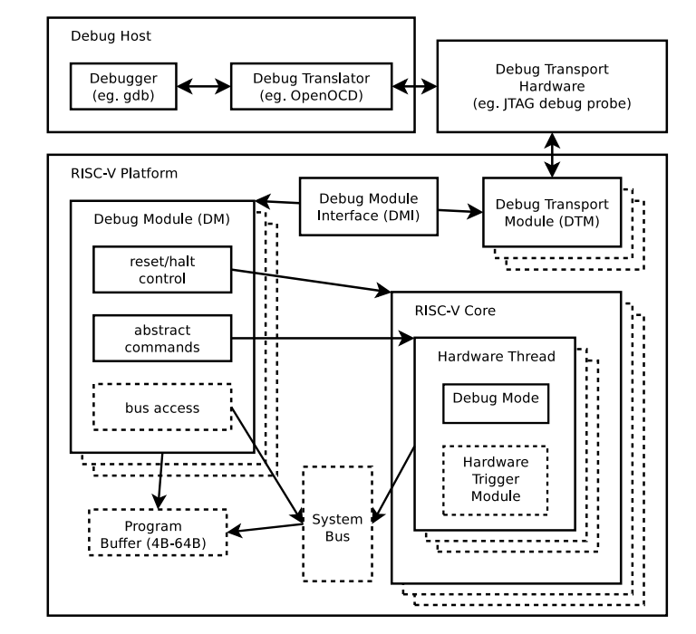
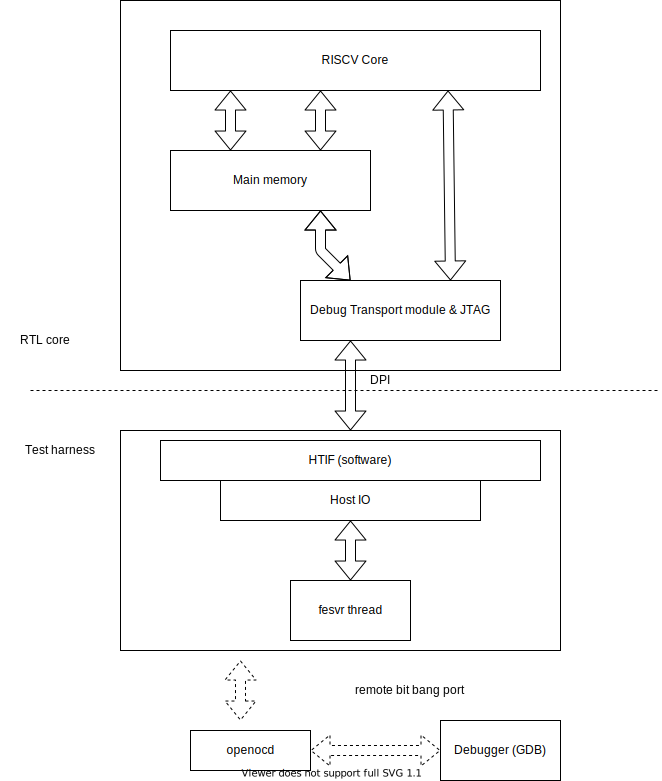

RISCV Open Source Verification and Simulation Strategy
RISCV Core模擬驗證策略開源方案
RISC-V Core verification and simulation with OpenSource solution
最近看了比較多core，而自己也有為了測試跑了很多core的模擬，之前也因為實驗室需求搞了一些簡易的純模擬測試平台。所以把一些心得整理一下。
做CPU驗證流程當然應該是先確定邏輯正確，之後才是合成後timing與現實情況正確(上FPGA跑更複雜的模擬)。如果直接用FPGA跑模擬，要等合成，要搭建實驗平台，同時若要debug還要合ILA之類的debug module進去，每次時間會消耗很多，這樣對於前期處理器bug很多，還在建制的情況下十分沒有效率。因此有很多behavior model simulation方式，如用一些商用工具如:VCS或是Viviado進行模擬。這樣效率也很高，而且現在工具，如果testbench寫的好，tcl script寫的好，其實效率也是蠻高的。不過這些工具都是閉源，而且有些要錢(VCS)，所以對於一般開發者，如我們學生來說難以取得這類工具支援。所以現在很多RISCV core提供Verilator模擬驗證方式。
Verilator簡介
- 開源
Verilator是一項由Linux Foundation旗下的Chips Alliance維護的開源專案，自從轉入Linux Foundation旗下後，開發更加頻繁，社群也變得更大。Verilator跟一般的VCS或是Viviado不太一樣，她只能做cycle accurate behavioral model模擬。他的機制是將verilog或是SystemVerilog轉成C++或是SystmeC進行"cycle accurate"模擬，也就是所有delay時間等操作均無效。
- 特性
cycle accurate模擬使她比一般商用模擬還要快(因為不用考慮timing)，在此架構下，verilator可以讓執行檔pthread，進行多線程支援。但Verilator在verilog或是SystemVerilog上仍有一些支援與不支援的地方。基本上可以被合成電路的語法她都支援。在SystemVerilog下還部份支援C/C++與SystemVerilog溝通的Verilog Procedural Interface(VPI)語法與Direct Programming Interface (DPI)語法。而因為其會將Verilog編成C/C++，所以可以用一些C/C++的方法直接更改邏輯中的值，這些方法讓我們用C/C++寫testbench可以更加快速。
而Verilator只支援2-state(0和1)，還有一點tristate，所以verilog中的’x’和’z’她會直接給入random值，這好處是會造成結果錯誤，可以更快debug，因為一般這些’x’和’z’訊號不該被拿來運算。
- 限制
- cycle accurate
- no delay
- 沒force,release(可以直接看 https://github.com/verilator/verilator/blob/master/src/verilog.y#L2723 )
- always block sensitivity list有限制（https://github.com/verilator/verilator/issues/37）
- 沒fork…join,semaphore
- 還有其他可以看她的yacc
- SVA部份不支援
- Verilator取得
- Ubuntu有package可以安裝
- 若其他distro或是想要最新版可以從https://github.com/verilator/verilator clone下來編(或是從 https://git.veripool.org/git/verilator)
- 安裝文件：https://github.com/verilator/verilator/blob/master/docs/install.adoc
- 使用流程
- 準備Verilog/SystemVerilog專案
- 建立C++ wrapper作為testbench或是cycle/reset驅動(這邊有很多變形可以讓debug更方便)
- 透過Verilator編譯Verilog或是SystenVerilog還有剛剛的C++ wrapper成一些library以及*.cpp/*.h檔，同時她會產生 .mk file供編譯使用。
- 用他的 .mk file編譯cpp source code成binary
- 執行binary開始執行
$ verilator -Wall --cc $(VERILOG_SRC) --exe sim_main.cpp # 產生obj_dir，裡面含有 *.cpp/*.h檔還有library檔
$ make -j -C obj_dir -f Vour.mk Vour #這裡的Vour.mk要看你的top module決定V{top module name}
$ ./obj_dir/Vour # 執行
- 關於verilator的教學，我建議直接閱讀官方manual會比較好。官方連結
RISCV core模擬方式
首先在模擬一個CPU我們需要模擬RAM,週邊裝置還有debug port(optional)。
添加一個虛擬的ram
在建構RAM來模擬時我們需要考量:
-
RAM的interface 如你的core是透過AXI來從RAM抓取資料的，還是透過其他protocol抓取資料的，一般的CPU不會直接從core透過AXI接到主記憶體，中間可能會經過一些L1 cache,L2 cache，或是一些用來存取主記憶體的ip，而這些內部的protocol通常不像AXI那樣複雜，如果你的目標不是測試這些interface或是比較外圍的module，你可以考慮讓你的core直接透過這些比較簡單的protocl接到你的 “假RAM”。這邊pulp-platform/ariane是一個很好的範例： https://github.com/pulp-platform/ariane/blob/master/tb/common/dp_ram.sv ，你可以發現他的dp_ram寫的十分簡單。
-
RAM的大小
verilog array或是vector在verilator中無法支援太大的大小，verilator有array width上限，不能太大，不可能合個4GB ram什麼的，而且如果只是要跑測試也不太需要這麼大的空間。
但是如果是32bit core，可能會存取高位，或是特定區段的RAM，解決方式，可以就設定一個小一點ram（幾MB）這樣，接下來在"假ram"中進行位址轉換，例如:把0x80000000 map到0x0這類操作。如果：要存取比較分散的ram位址，可以用類似方法map多段ram。
-
C++ testbench RAM存取小技巧
雖然Verilator可以存取module裡的reg或是wire（前提是該module是有標記為"/*verilator public_module*/",或是該變數被標為 /*verilator public*/），但是我們也可以透過藉由task 或是 function來存取verilator model(https://www.embecosm.com/appnotes/ean6/html/ch06s02s03.html)，範例如下：
當我們在"假ram"中宣告以下function
task writeByte;
/*verilator public*/
input integer byte_addr;
input [7:0] val;
begin
reg [31:0] tmp_addr;
tmp_addr = byte_addr - MEM_OFFSET;
if (byte_addr >= MEM_OFFSET && byte_addr < MEM_OFFSET+MEM_SIZE) begin
mem[tmp_addr[PART_ADDR_WIDTH-1:0]] = val;
end
end
endtask
verilator合成完的dp_ram會產生獨立的.cpp和.h檔，裡面你可以發現類似的class method宣告，你會發現裡面出現writeByte這個method：
//----------
VL_MODULE(Vtestharness_dp_ram) {
public:
// PORTS
VL_IN8(__PVT__clk,0,0);
//...
VL_OUTW(__PVT__rdata_dcache_o,255,0,8);
// LOCAL SIGNALS
CData/*1:0*/ __PVT__icache_cur_state;
//...
CData/*7:0*/ mem[2097152];
// LOCAL VARIABLES
CData/*5:0*/ __Vtableidx1;
static CData/*1:0*/ __Vtable1___PVT__dcache_next_state[64];
// INTERNAL VARIABLES
private:
Vtestharness__Syms* __VlSymsp; // Symbol table
public:
// PARAMETERS
enum _IDataMEM_SIZE { MEM_SIZE = 0x200000U};
enum _IDataMEM_OFFSET { MEM_OFFSET = 0x80000000U};
// CONSTRUCTORS
private:
VL_UNCOPYABLE(Vtestharness_dp_ram); ///< Copying not allowed
public:
Vtestharness_dp_ram(const char* name = "TOP");
~Vtestharness_dp_ram();
// INTERNAL METHODS
void __Vconfigure(Vtestharness__Syms* symsp, bool first);
private:
void _ctor_var_reset() VL_ATTR_COLD;
public:
uint32_t readByte(uint32_t byte_addr);
uint32_t readWord(uint32_t byte_addr);
void writeByte(uint32_t byte_addr, uint32_t val);
void writeWord(uint32_t byte_addr, uint32_t val);
static void traceInit(VerilatedVcd* vcdp, void* userthis, uint32_t code);
static void traceFull(VerilatedVcd* vcdp, void* userthis, uint32_t code);
static void traceChg(VerilatedVcd* vcdp, void* userthis, uint32_t code);
} VL_ATTR_ALIGNED(VL_CACHE_LINE_BYTES);
之後你就可以在testbench 的c++中呼叫這些函式。如下範例，header請依照你verilator synthesis出來的為準：
#include "verilated_vcd_c.h"
#include "Vtestharness.h"
#include "Vtestharness__Syms.h"
#include "verilated.h"
void sim_mem_write(Vtestharness_dp_ram* ram,uint32_t addr, size_t length, const void* bytes)
{
for (int i = 0 ; i < length ; i +=4 ) {
ram->writeByte(addr+i,*((unsigned char*)bytes+i+3));
ram->writeByte(addr+i+1,*((unsigned char*)bytes+i+2));
ram->writeByte(addr+i+2,*((unsigned char*)bytes+i+1));
ram->writeByte(addr+i+3,*((unsigned char*)bytes+i));
}
}
添加一個虛擬的UART (週邊)
有時候為了方便debug，需要支援printf等透過UART輸出的界面(riscv-tests不需要)。所以需要一個假的uart來透過memory map IO輸出資料到console，通常不需要支援input。由於是透過memory map IO，因此也可以跟上面提到的protocol選擇一樣選一個比較簡單好實做的部份。
實做只要透過$write() function來輸出資料到console。
Debug module部份我合到底下來談。
RISCV core 模擬驗證策略
有兩種測試方案，第一種是與debug module合併，透過CPU本身的Debug module與host的RISCV frontend server(fesvr)進行互動(上傳binary到CPU的RAM中，監控，提供gdb support等)。令一個是針對沒有debug module支援的core，透過Verilator直接改寫RAM來載入程式，以及提供監控功能。
簡單的Verilator 程式載入RISCV core驗證策略
這個方式你沒辦法讓你的Verilator model與gdb等工具互動，因此你需要建立一個你自己的elf載入機制。關於riscv elf可以在https://github.com/riscv/riscv-isa-sim/blob/master/fesvr/elfloader.cc 找到，這個code可以幫助我們解析elf並得到physical memory address，加上上面提到的"假RAM"讀寫機制，我們可以合併達成程式載入器。另一個方法是透過SystemVerilog的readmemh方式載入預先處理好的memory file到"假RAM"中，這兩種方式都有開源專案使用。以下列出兩個代表專案：
- Taiga:
- repo:https://gitlab.com/sfu-rcl/Taiga
- 作法：透過SystemVerilog載入程式，並透過C++ model進行Core內部追蹤
- cv32e40p：
- repo:https://github.com/openhwgroup/cv32e40p
- 作法：透過C++載入program hex到ram中
- Core-SweRV:
- repo:https://github.com/chipsalliance/Cores-SweRV/
- 作法：透過SystemVerilog載入program hex到RAM中，雖然其有Jtag支援，不過Core主要是用這方法
由於沒有Jtag或是Debug module支援，這類處理器通常會透過Verilator的model存取功能，寫自己的core tracer，來追蹤CPU內部重要訊號的動作。
riscv-tests 使用
應該沒有人寫riscv core不跑過一遍riscv-tests的吧。由於riscv-tests預設你的core不一定有UART等界面，所以她透過tohost和fromhost這兩個CSR(其實是memory)進行溝通，所以當你的core在透過"假ram"方式進行模擬時，你必須要讓你的verilator testbench可以去得到tohost的修改事件(監控tohost的記憶體存取)，這時會牽扯到你的core的cache行為，如果你core有DCache且行為不是write through時，由於riscv-test的結果會透過一個無窮迴圈一直寫入tohost，當你的cache是用write-back時，並不會觸發write back到main memory的機制(因為該cache line根本就不會被取代)。這時你需要其他監控tohost的值的方法，以下有一些解決選項：
- tohost的所在記憶體區段用軟體設為non cacheable，前提是你的core支援這項操作
- 建構一個假的peripheral device，就像前面提到的uart一樣監控IO device行為
Verilator RISCV core + fesvr策略
對於開發完成度很高的core，尤其是提供JTAG等Debug Transport module的CPU通常會使用這種策略，而這種策略最有名都是UC Berkeley的專案。
fesvr
fesvr是riscv-isa-sim(spike)下的一個子系統riscv-isa-sim ，全名是RISC-V frontend server，用來作為host 與測試Core溝通的橋樑。有用來提供Remote Bit-Bang(rbb) client與host常用的openocd相連，提供類似實體晶片常用的jtag的功能。
Host Target Interface(HTIF)
HTIF（software）是一個Host跟測試hardware溝通的手段，主要是透過存取tohost和fromhost這兩個CSR (雖說是CSR，其實是記憶體位址，在riscv-test中存取方式是透過sw/lw，https://github.com/riscv/riscv-test-env/blob/master/p/riscv_test.h#L259)來溝通，fesvr載入elf程式時會特別找到tohost和fromhost label(https://github.com/riscv/riscv-isa-sim/blob/master/fesvr/htif.cc#L126)，然後執行過程中監看與讀寫這兩個CSR，這其實是一個非官方的手段，不過在riscv的ecosystem中很常使用這手段進行溝通，例如riscv-pk，也使用這方式與host溝通(https://github.com/riscv/riscv-pk/blob/master/machine/htif.c)。
Debug Transport Module(DTM)

- 圖片擷取至riscv-debug-spec
Debug Transport Module是在platform介於Debug Transport Hardware和Debug module之間的部份，由於Debug Transport Hardware有多種實做方式，例如：最廣泛的JTAG或是USB等傳輸方式來與Debug Host(例如：PC等)溝通。Debug Transport Module(DTM)在整個Debug的架構圖如上。 Debug Transport Module現在在RISCV debug spec中有詳細的定義。
連接verilator model與fesvr
為了連接Design Under Test(DUT,這裡是core)，verilator model必須透過DPI來與Core的JTAG和DTM相連，這邊可以參考rocket-chip的作法( https://github.com/chipsalliance/rocket-chip/tree/master/src/main/resources)，在這資料夾的vsrc下有SimJTAG.v和SimDTM.v，在csrc下有SimJTAG.cc和 SimDTM.cc，進去看原始碼就會看到DPI的寫法。為了使用JTAG必須使用軟體實做bit-bang(csrc下的remote_bitbang.cc)，好讓HTIF和fesvr thread可以與其相連。最後就可以透過開啟remote bit-bang，接下來讓host的openocd連上verilator model，再開啟讓gdb連接完成完整的debug環境。

代表專案
- rocket-chip:
- repo: https://github.com/chipsalliance/rocket-chip/
- 目前被搬到chipalliance底下維護，為riscv開源代表，也是實做上述機制的代表。
- 主要關於這方面的code在：https://github.com/chipsalliance/rocket-chip/tree/master/src/main/resources 資料夾下。
- ariane:
- repo: https://github.com/pulp-platform/ariane
- ETHZ的RISCV代表專案，很大一部份的模擬框架是源自於rocket-chip，不過好處是他是全SystemVerilog實做，對於對chisel不熟的人可以很快了解其模擬方式。
- 主要測試code在：https://github.com/pulp-platform/ariane/tree/master/tb 資料夾下。
- riscv-sodor:
- repo: https://github.com/ucb-bar/riscv-sodor/
- 為UC Berkeley下維護的教學用riscv核心，所以在測試方面幾乎和rocket-chip相似
- 主要測試相關code在：https://github.com/ucb-bar/riscv-sodor/tree/master/emulator/ 資料夾下。
- 其repo包含一份內部教學文件https://github.com/ucb-bar/riscv-sodor/blob/master/doc/lab1.pdf，有很詳細的模擬測試說明。